Statistiques bi variées - khi 2
1 Déroulement
1.1 Données d’exemple
hypothèse : relation entre les bv et les candidats
Deux distributions de variables de catégorie.
1.2 Différentes étapes
Tableau de contingence
calcul du khi2
comparaison avec le khi2 théorique
2 Tableau de contingence
Au sens anglais du terme, ce qui peut exister
2.1 Création
Utiliser l’outil de table dynamique (dans le menu données) pour le créer
Résultat attendu :
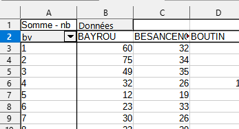
2.2 Analyse d’un tableau de contingence
Il faut présenter les sources, la structure et le contenu du tableau.
Lister les questions susceptibles d’être posées, notamment en étudiant les fréquences conditionnelles
2.2.1 Format conditionnel

Cet outil est-il utile ici ?
2.2.2 Fréquences conditionnelles en ligne et colonne
Pour pouvoir comparer les bureaux de vote, chaque groupe est ramené à une même base égale à 100.
savoir-faire tableur
Objectif : saisir une seule cellule et étendre la formule. quelle élément fixer, ligne ou colonne ?
utilisation du %

Analyse après avoir mis le format conditionnel.
répartition des candidats puis lorsque ramené à une base 100, on peut comparer entre les zones.
les écarts à la moyenne par candidat sont plus parlants
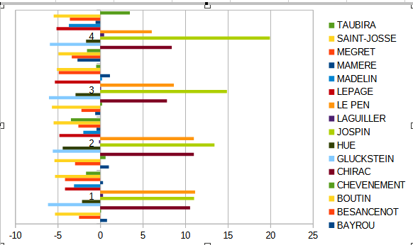
Qu’apporterait une étude des fréquences conditionnelles en colonnes ?
3 Tableau de contingence : correction
3.1 Manipulation du tableau
Il fallait travailler sur les élections 2022. Le tableau est présenté en longueur.
Pour pouvoir obtenir un tableau de contingence :
- Récupérer le nom de chaque candidat avec une formule
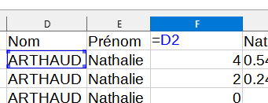 - faire une recopie incrémentée sur la droite
transposer le tableau et faire une copie spéciale valeurs uniquement (CTRL + MAJ + V)
poser un filtre et récupérer uniquement les noms des candidats
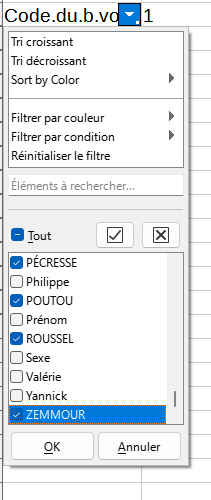
- ne pas oublier de faire un copier - coller du tableau final en transposant
3.2 Correction rapide
3.2.1 Description de la donnée
Il s’agit des résultats de la présidentielle sur 2022 à Bondy (chiffres du ministère de l’intérieur via data.gouv.fr)
La donnée comporte 2 variables :
- les 32 bureaux de vote
- les 12 candidats
3.2.2 Graphique
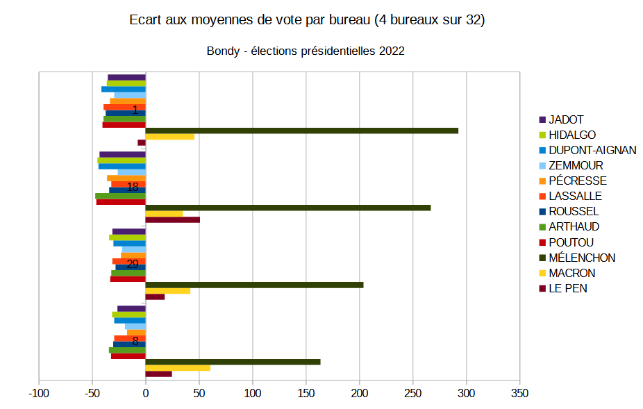
Remarquer le titre
au niveau de la présentation des séries, la boite de dialogue plages de données permet de classer les séries
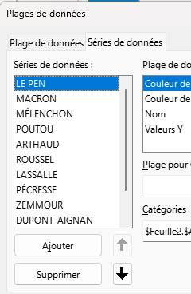
3.2.3 Analyse
Sur les 12 candidats, 3 arrivent en tête dans tous les bureaux avec cependant un vote majoritaire pour Mélenchon dans l’échantillon des 4 bureaux. Les voies se répartissent de manière quasiment homogène sur les 9 autres candidats. Même si les bureaux restent différents, les répartitions des votes se ressemblent. Les différences entre bureaux étaient plus marquées en 2002.
3.2.4 Observations sur les villes choisies
4 Khi2 : un exemple sur un dé truqué
Le dé est-il truqué ?
| face | effectif |
|---|---|
| 1 | 15 |
| 2 | 7 |
| 3 | 4 |
| 4 | 11 |
| 5 | 6 |
| 6 | 17 |
Le nombre total de lancers est de 60.
4.1 Hypothèse d’indépendance
hypothèse H0 : le dé n’est pas truqué (il y a indépendance entre la face et le nombre de fois où elle sort)
4.2 Effectifs théoriques
Sur le total des lancers (60), chaque face aurait pû sortir 10 fois.
| face | effectif | effectifThéorique |
|---|---|---|
| 1 | 15 | 10 |
| 2 | 7 | 10 |
| 3 | 4 | 10 |
| 4 | 11 | 10 |
| 5 | 6 | 10 |
| 6 | 17 | 10 |
4.3 Calcul du khi2
distance entre effectifs théoriques et observés
Elle se mesure avec le khi2
On calcule l’écart, puis le carré de cet écart et on pondère par l’effectif théorique.
## [1] 5 -3 -6 1 -4 7## [1] 25 9 36 1 16 49## [1] 2.5 0.9 3.6 0.1 1.6 4.9## [1] 13.64.4 Test du khi2
4.4.1 Paramètres du test
- degré de liberté : 5
C’est le nombre de valeurs possibles -1 (car on peut déterminer la 6e valeur à partir des 5 autres)
- Pour un risque à 0,05 (5 chances sur 100 de se tromper)
4.4.2 Résultat
Lecture dans la table du khi2
 le khi2 théorique est de 11,7, il est
donc inférieur au khi2 observé.
le khi2 théorique est de 11,7, il est
donc inférieur au khi2 observé.
Quand le khi2 théorique est inférieur, le test est rejeté.
Le test est rejeté avec un risque de 5 % mais on aurait pu aller jusqu’au risque de 2.5 % (1 chance sur 25)
Donc, le dé est truqué.
5 Mise en pratique sur les résultats des votes 2002
5.1 Ennoncer l’hypothèse H0
La répartition des votes entre les différents candidats est indépendant du bureau de vote.
5.2 Effectif théorique
La première case reçoit la formule :
- (total lg / total) * total colonne
C’est ce qu’on appelle également le produit des marges

5.3 Ecarts entre observés et théoriques
Que signifie une valeur zéro ?
Utiliser la notion
- sur représentation / sous représentation

Sur les bureaux 1 et 2, on observe une sur-représentation de Bayrou et une sous-représentation de Taubira. (en principe, les bureaux 1 et 2 sont plutôt au centre ville)
5.4 Le Khi2
Le khi2 va permettre de valider le rejet de l’hypothèse d’indépendance.
rappel : métrique euclidienne plutôt que les valeurs absolues on utilise les carrés
5.4.1 Le Khi2 partiel
On met les écarts rapportés à la valeur théorique d’indépendance au carré (on mesure ainsi une distance)
on divise par l’effectif théorique (on relativise)

5.4.2 Le Khi2
C’est le total des khi2 partiels (dans notre exemple 768)
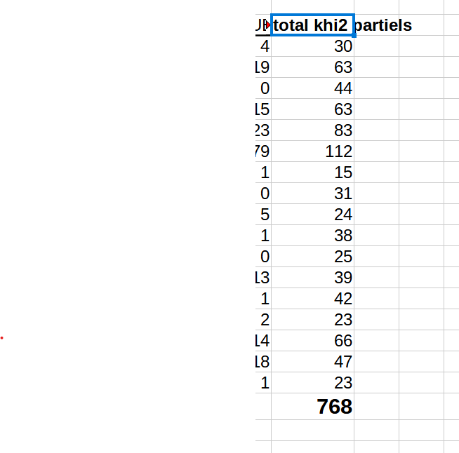
On définit :
- degré de liberté lg -1 * col -1
16 candidats et 17 bureaux
- risque 1, 5 et 10 %
Sur internet, dans n’importe quelle table, on cherche les valeurs correspondantes.
https://jeanpaullaurent.fr/media/docetud/table_khi2_complete.pdf
Comme le nombre de degrés de liberté est important, on peut aussi utiliser la formule du tableur
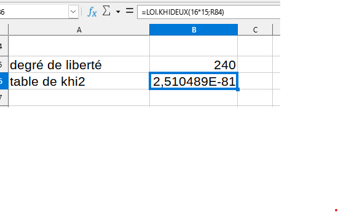
5.4.3 Rejet de H0 ou pas
HO hypothèse d’indépendance. son rejet implique qu’il y a une relation.
Les variables bureau de vote et candidats ont une relation avec une marge d’erreur très faible puisque le khi2 augmente quand le risque d’erreur baisse.
Les logiciels de stats proposent le risque limite, la valeur de bascule entre le rejet et l’acceptation de l’hypothèse nulle.
6 Correction exercice
Rappel de la consigne
Sur votre commune, pour 2002 et 2022, recoder les données et faire le khi2 pour les 2 élections afin de montrer l’existence d’une relation entre les bureaux de vote et les tendances politiques. Commenter les contributions au khi2 si c’est le cas.
rendu : un .pdf avec votre prénom comportant
- la justification du recodage
- les 2 exemples de khi2 partiels,
- les 2 tests d'indépendance,
- et le commentaire.Privilégier les termes : variable, catégorie, individu, distance, H0, indépendance, risque d’erreur.
6.1 données 2022 et 2002
| BAYROU | BESANCENOT | BOUTIN | CHEVENEMENT | CHIRAC | GLUCKSTEIN | HUE | JOSPIN | LAGUILLER | LE PEN | LEPAGE | MADELIN | MAMERE | MEGRET | SAINT-JOSSE | TAUBIRA |
|---|---|---|---|---|---|---|---|---|---|---|---|---|---|---|---|
| 60 | 32 | 8 | 54 | 943 | 1 | 35 | 147 | 56 | 315 | 18 | 27 | 56 | 18 | 8 | 39 |
| 75 | 34 | 9 | 71 | 1136 | 7 | 19 | 203 | 63 | 387 | 15 | 44 | 60 | 38 | 8 | 29 |
| 49 | 35 | 5 | 56 | 970 | 2 | 29 | 183 | 55 | 293 | 8 | 56 | 64 | 12 | 10 | 50 |
| 32 | 26 | 12 | 42 | 1054 | 3 | 41 | 234 | 60 | 263 | 10 | 23 | 51 | 24 | 7 | 87 |
| 12 | 19 | 6 | 30 | 753 | 4 | 36 | 198 | 41 | 249 | 3 | 8 | 39 | 12 | 2 | 75 |
| 23 | 33 | 7 | 47 | 1028 | 0 | 34 | 205 | 81 | 305 | 11 | 34 | 53 | 16 | 5 | 127 |
| ARTHAUD | ROUSSEL | MACRON | LASSALLE | LE.PEN | ZEMMOUR | MÉLENCHON | HIDALGO | JADOT | PÉCRESSE | POUTOU | DUPONT.AIGNAN |
|---|---|---|---|---|---|---|---|---|---|---|---|
| 4 | 8 | 96 | 7 | 75 | 34 | 233 | 7 | 20 | 37 | 2 | 10 |
| 2 | 20 | 158 | 17 | 82 | 31 | 218 | 3 | 31 | 29 | 7 | 6 |
| 0 | 10 | 106 | 9 | 60 | 25 | 398 | 11 | 14 | 24 | 4 | 11 |
| 1 | 3 | 84 | 6 | 70 | 18 | 335 | 3 | 9 | 12 | 1 | 6 |
| 1 | 1 | 73 | 2 | 19 | 5 | 410 | 4 | 0 | 5 | 3 | 3 |
| 2 | 9 | 110 | 4 | 36 | 30 | 366 | 5 | 4 | 13 | 3 | 11 |
On remarque en passant que les ordres de grandeur des votes sont différents. Il y a moins de voix exprimées en 2022 qu’en 2002.
6.2 Recodage
Le recodage se fait entre petits et grands en fonction des résultats nationaux
names(tab2022) <- c("petit gauche", "petit gauche", "droite", "petit droit", "droite", "petit droit", "gauche", "petit gauche", "petit gauche", "petit droit",
"petit gauche", "petit droit")
categ <-unique(names(tab2022))
colnames(tab2002) <- c("petit droit", "petit gauche", "petit droit", "petit gauche", "droite", "petit gauche", "gauche", "gauche", "petit gauche", "droite", "petit gauche", "petit droit", "petit gauche", "petit droit", "petit droit", "gauche")6.3 Agrégation données
On somme les colonnes ayant le même terme, c’est une agrégation.
| gauche | petit.droit | droite | petit.gauche | |
|---|---|---|---|---|
| 1 | 274 | 88 | 171 | 41 |
| 2 | 281 | 83 | 240 | 63 |
| 3 | 437 | 69 | 166 | 39 |
| 4 | 352 | 42 | 154 | 17 |
| 5 | 419 | 15 | 92 | 9 |
| 6 | 389 | 58 | 146 | 23 |
| gauche | petit.droit | droite | petit.gauche | |
|---|---|---|---|---|
| 1 | 438 | 121 | 1258 | 217 |
| 2 | 501 | 174 | 1523 | 250 |
| 3 | 482 | 132 | 1263 | 220 |
| 4 | 554 | 98 | 1317 | 192 |
| 5 | 445 | 40 | 1002 | 136 |
| 6 | 591 | 85 | 1333 | 225 |
La différence d’ordre de grandeur est ici flagrante…
## $`election 2002`
##
## Pearson's Chi-squared test
##
## data: X[[i]]
## X-squared = 181.57, df = 48, p-value < 2.2e-16
##
##
## $`election 2022`
##
## Pearson's Chi-squared test
##
## data: X[[i]]
## X-squared = 776.37, df = 93, p-value < 2.2e-16Mais il y a indépendance bureau de vote et candidats en 2002 comme en 2022.
6.4 Analyse des khi2 partiels
Les tableaux pouvaient être affichés, mais on pouvait penser à afficher la distribution des khi2 partiel (en % du total)
| khi2 partiel | |
|---|---|
| 1 | 3.8251366 |
| 2 | 16.3934426 |
| 3 | 4.3715847 |
| 4 | 5.4644809 |
| 5 | 21.3114754 |
| 6 | 9.8360656 |
| 7 | 2.1857923 |
| 8 | 2.1857923 |
| 9 | 3.8251366 |
| 10 | 4.9180328 |
| 11 | 0.0000000 |
| 12 | 6.0109290 |
| 13 | 0.5464481 |
| 14 | 0.5464481 |
| 15 | 12.0218579 |
| 16 | 3.8251366 |
| 17 | 2.7322404 |
| khi2 partiel | |
|---|---|
| 1 | 4.1184041 |
| 2 | 7.7220077 |
| 3 | 1.4157014 |
| 4 | 1.6731017 |
| 5 | 14.2857143 |
| 6 | 1.9305019 |
| 7 | 0.7722008 |
| 12 | 1.0296010 |
| 18 | 1.9305019 |
| 19 | 4.5045045 |
| 20 | 3.9897040 |
| 21 | 5.9202059 |
| 22 | 0.6435006 |
| 24 | 7.9794080 |
| 25 | 2.5740026 |
| 29 | 6.3063063 |
| 8 | 0.1287001 |
| 9 | 1.9305019 |
| 10 | 1.6731017 |
| 11 | 1.0296010 |
| 13 | 1.2870013 |
| 14 | 0.1287001 |
| 15 | 6.0489060 |
| 16 | 1.2870013 |
| 17 | 0.3861004 |
| 23 | 1.9305019 |
| 26 | 6.1776062 |
| 27 | 1.5444015 |
| 28 | 0.1287001 |
| 30 | 8.6229086 |
| 31 | 0.7722008 |
| 32 | 0.1287001 |
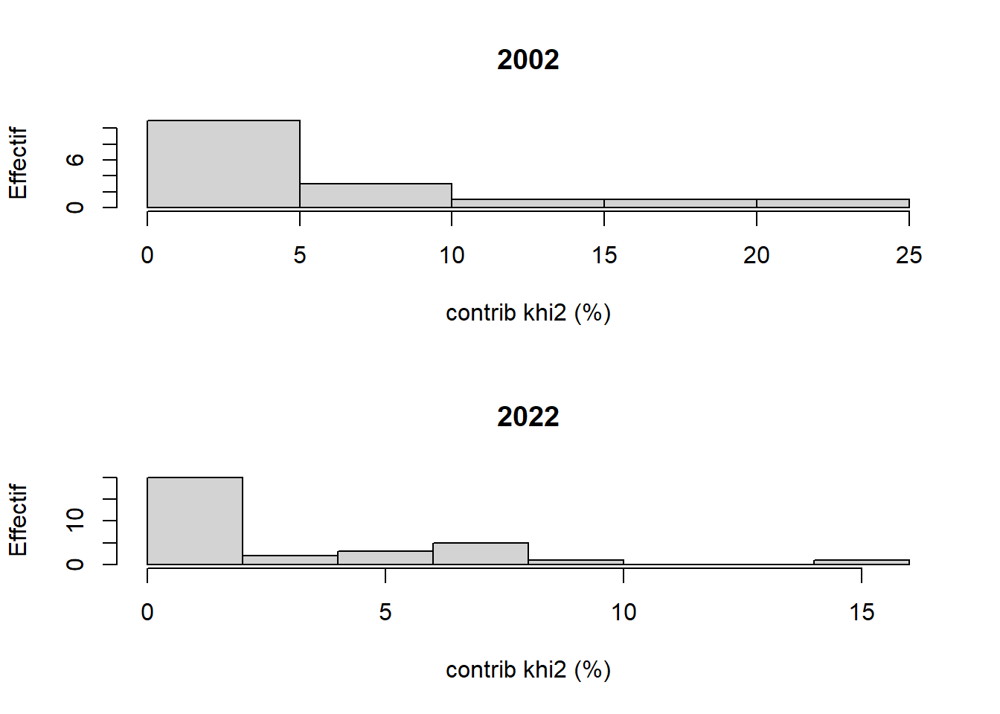
Dans les deux cas, il y a beaucoup de bureaux qui sont proches de l’indépendance. En 2002, la dispersion est plus importante. Donc 3 bureaux ont un profil très spécifiques. En 2022, un seul bureau est important pour la spécificité des résultats de l’élection. Il s’agit du bureau 5. La caractéristique est d’avoir une polarisation des voix de gauche par rapport aux autres bureaux bondynois.
| gauche | petit.droit | droite | petit.gauche | b.vote |
|---|---|---|---|---|
| 419 | 15 | 92 | 9 | 5 |
| 388 | 27 | 101 | 16 | 24 |
| 262 | 38 | 132 | 22 | 14 |
Le bureau 24 apporte une plus forte contribution au modèle observé que le bureau 14. La droite représente 1/3 de la gauche et les petits candidats ont moins de voix. Le bureau 14 est plus proche de l’indépendance, la droite représente la moitié de la gauche et les petits candidats ont un peu plus de voix.
7 Complément cartographique
Une cartographie semble intéressante mais seuls les périmètres de 2022 sont connus.
## Linking to GEOS 3.9.3, GDAL 3.5.2, PROJ 8.2.1; sf_use_s2() is TRUE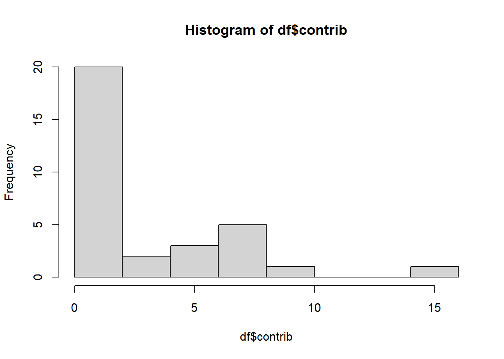
## png
## 2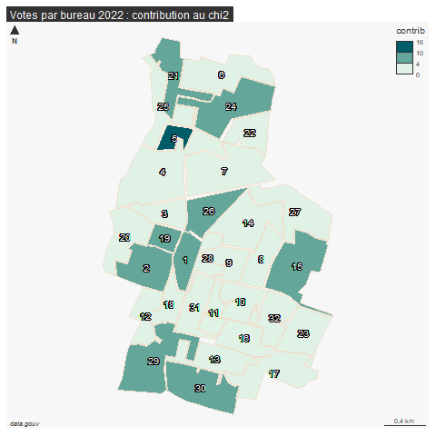
Cette carte permet de situer précisemment les bureaux qui s’écartent le plus de modèle bondinois, en l’occurrence, il s’agit d’abord du bureau 5. On peut imaginer soit un trucage de l’élection, soit les efforts d’un groupe militant spécifique.
Ce qui est intéressant ici est que ces bureaux sont situés sur l’ensemble du territoire de la commune, dans les zones pavillonnaires.
8 En guise de conclusion : pourquoi le khi2 ?
8.1 Les fréquences conditionnelles suffisent-t-elles ?
Comparaison des 2 tableaux
Fréquence conditionnelle en ligne
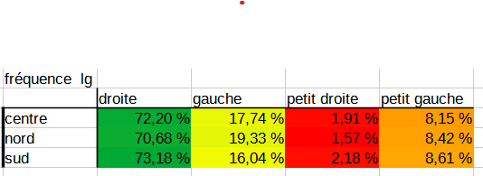
La distance entre les données observées et théoriques
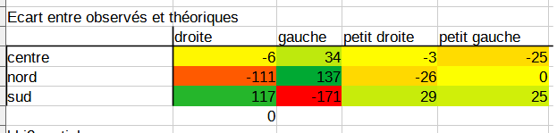
Estimation des écarts fondés sur la pondération des masses
L5GEABIM Analyses bivariées et multivariées